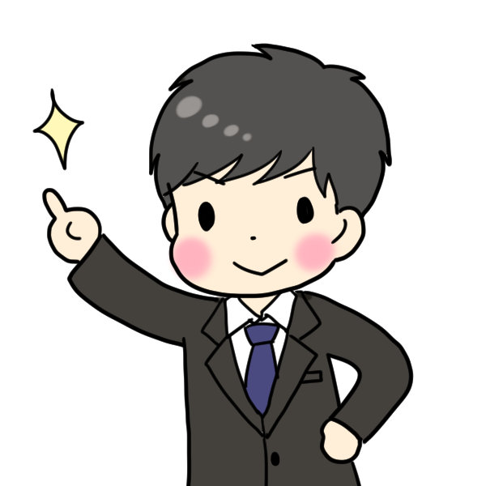

職員のみなさんの紹介です。
当施設では利用者様とのコミュニケーションを第一に日々明るく過ごしております。
こやま たくや
就労継続支援B型とは、障害や難病のある方のうち年齢や体力などの理由から、 企業等で雇用契約を結んで働くことが困難な方が、軽作業などの就労訓練を行うことができる福祉サービスです。 障害者総合支援法に基づく福祉サービスのひとつであり, 比較的簡単な作業を、短時間から行うことが可能です。 年齢制限はなく、障害や体調に合わせて自分のペースで働くことができ、就労に関する能力の向上が期待できます。 事業所と雇用契約を結ばないため、賃金ではなく、生産物に対する成果報酬の「工賃」が支払われます。 厚生労働省の社会福祉施設等調査によると、B型事業所は2016年時点で1万214事業所あり、利用者は25万2597人です。
personnel
就労継続支援B型とは、障害や難病のある方のうち年齢や体力などの理由から、 企業等で雇用契約を結んで働くことが困難な方が、軽作業などの就労訓練を行うことができる福祉サービスです。 障害者総合支援法に基づく福祉サービスのひとつであり, 比較的簡単な作業を、短時間から行うことが可能です。 年齢制限はなく、障害や体調に合わせて自分のペースで働くことができ、就労に関する能力の向上が期待できます。 事業所と雇用契約を結ばないため、賃金ではなく、生産物に対する成果報酬の「工賃」が支払われます。 厚生労働省の社会福祉施設等調査によると、B型事業所は2016年時点で1万214事業所あり、利用者は25万2597人です。
personnel

就労継続支援B型とは、障害や難病のある方のうち年齢や体力などの理由から、 企業等で雇用契約を結んで働くことが困難な方が、軽作業などの就労訓練を行うことができる福祉サービスです。 障害者総合支援法に基づく福祉サービスのひとつであり, 比較的簡単な作業を、短時間から行うことが可能です。 年齢制限はなく、障害や体調に合わせて自分のペースで働くことができ、就労に関する能力の向上が期待できます。 事業所と雇用契約を結ばないため、賃金ではなく、生産物に対する成果報酬の「工賃」が支払われます。 厚生労働省の社会福祉施設等調査によると、B型事業所は2016年時点で1万214事業所あり、利用者は25万2597人です。
personnel

就労継続支援B型とは、障害や難病のある方のうち年齢や体力などの理由から、 企業等で雇用契約を結んで働くことが困難な方が、軽作業などの就労訓練を行うことができる福祉サービスです。 障害者総合支援法に基づく福祉サービスのひとつであり, 比較的簡単な作業を、短時間から行うことが可能です。 年齢制限はなく、障害や体調に合わせて自分のペースで働くことができ、就労に関する能力の向上が期待できます。 事業所と雇用契約を結ばないため、賃金ではなく、生産物に対する成果報酬の「工賃」が支払われます。 厚生労働省の社会福祉施設等調査によると、B型事業所は2016年時点で1万214事業所あり、利用者は25万2597人です。
こんにちは！私たちが支援員です！
頑張ります！